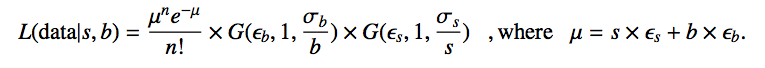
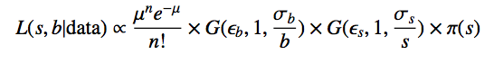
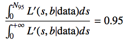
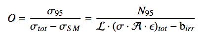

2011 ADD Analysis
Rob Roy Fletcher
University of Pennsylvania

Counting Experiment
In 2011 a counting experiment was performed to find broad excesses.
First a cut is made on $M_{\gamma\gamma} > 1217 GeV$. Count all events that pass cut.
Using Bayes theorem:
Here the background comes from a MC template.
Then to get the Beyesian upper limit at the 95% CL:
$N_{95}$ is then our observed limit on the number of events which for this analysis was found to be 7.21 events given 4 events in data with an expected 2.32 background events.
Optimizing the $M_{\gamma\gamma}$ Cut
Using the grid point $n_{ED}=2$, $M_S=2500 GeV$ they minimized a "figure of merit":
Here $N_{95}$ is computed from above. The 'tot' contribution is from the MC signal samples and the SM is from the background templates. This corresponds to the smallest expected cross-section of NP.